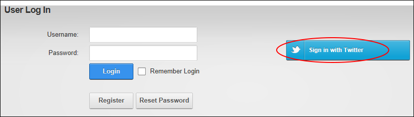

Logging in with Twitter
How to login to a DNN site using your existing Twitter account. This allows you to login without needing to create a new user account for this site.
- Click the Login link (typically located in the top right corner of each page) - OR - Navigate to an Account Login module.
- Click the Sign in with Twitter button to go to the Twitter website.

- Complete login using your Twitter credentials. If you are already logged into Twitter on this computer you will be automatically logged in.
-
See "Configuring Twitter Authentication"